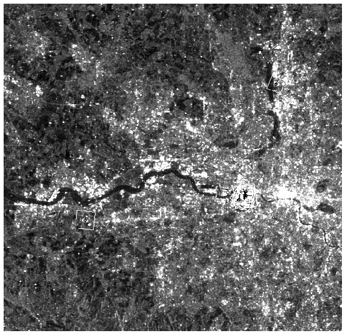

ASIFT (Affine-SIFT) Keypoint Detector
While SIFT is fully invariant with respect to only four parameters namely zoom, rotation
and translation, the new method treats the two left over parameters: the angles defining
the camera axis orientation. The method permits to reliably identify features that have
undergone very large affine distortions measured by a new parameter, the transition tilt.
As described in [1], ASIFT simulates with enough accuracy all distortions caused by a variation of the camera optical axis direction. Then it applies the SIFT method. In other words, ASIFT simulates three parameters: the scale, the camera longitude angle and the latitude angle and normalizes the other three (translation and rotation), what SIFT lacked.
The ASIFT detector performs keypoint detection.

Figure 1. ASIFT detected keypoints
[1] J. Morel and G. Yu. Asift: A new framework for fully affine invariant image comparison. SIAM Journal on Imaging Sciences, 2(2):438–469, 2009.
[2] SIFT and ASIFT - online demo